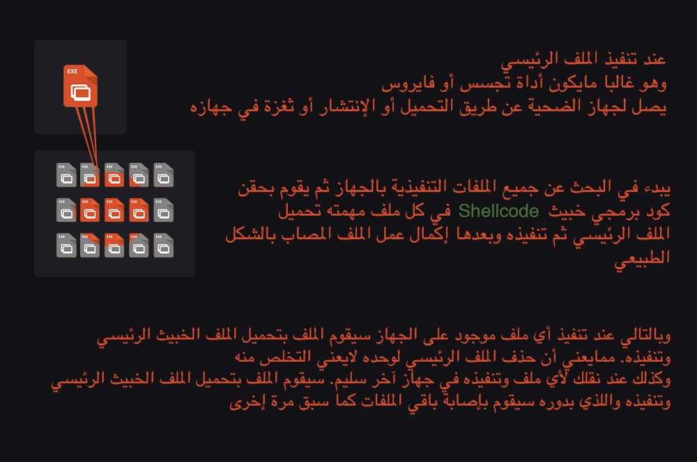
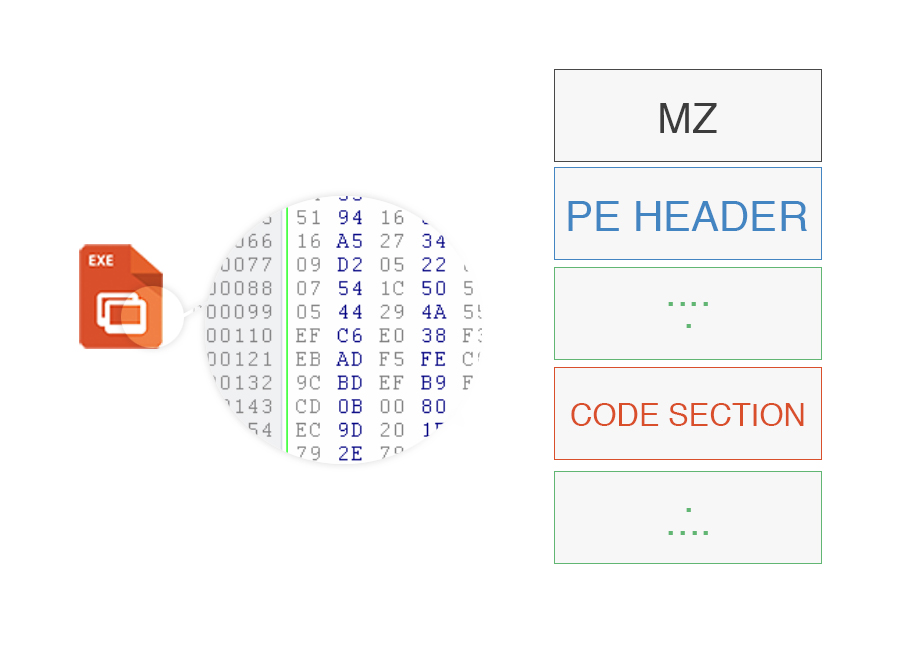

ألية عمل PE Infection
توجد طرق إنتشار عديدة للبرمجيات الخبيثة عبر ثغرات الشبكات وغيرها. ولكن من الطرق المهمل ذكرها في المجتمع السيبراني العربي ما أكتب عنه هذا المقال. أتمنى أن يعود بفائدة للقارئ في حماية نفسه من مخاطر إنتشار البرمجيات الخبيثة. طرق الحماية في نهاية المقال. كما سأشرح بإختصار آلية عملها للمهتمين فالأمن السايبراني.
ماهي
عدوى الملفات التنفيذية أو PE Infection هي من أقدم الطرق المستخدمة في نشر الملفات الخبيثة من باك دورز أو فايروسات وغيره في الجهاز. هي طريقة مستوحاة من الإلتهاب وكيفية إنتشاره لما يحيط به من خلايا الجسم. تكمن قوة الآلية في كونها تصيب أغلب الملفات التنفيذية في الجهاز المستهدف وبدوره يكون كل ملف مصاب وسيلة لنشر العدوى. فعند نقل أي ملف تنفيدي من جهاز مصاب لجهاز آخر ثم تنفيذه يعني ذلك إصابة جهاز جديد.
تعمل الفكرة على أغلب الأنظمة المعروفة ولكن سأتطرق لعملها على نظام Windows فقط لفعاليتها العالية على هذا النظام تحديداً وفشلها لأسباب عدة فالأنظمة الإخرى سنتطرق لها لاحقاً. كما تشير كلمة PE في العنوان إلى Portable Executabe وهي تركيبة الملفات التنفيذية المستخدمة في نظام Windows.
كيفية عملها

مخاطرها
سرعة الإنتشار العالية. وعملها بصمت بحيث يعمل كل ملف في جهازك لصالح الإنتشار بدون علمك. كون الملفات تعمل بشكل طبيعي. أيضا صعوبة التخلص منها. وسهولة مرورها على بعض الخبراء الأمنيين غير المطلعين على هذه الآلية. فيمكن أن يعتقد الخبير الأمني بأنه تخلص من كل أثر لأداة التجسس على سبيل المثال، دون أن يعلم بأنه بمجرد تنفيذه لملف آخر في جهازه سيقوم الملف بتحميل الأداة وتنفيذها مرة إخرى.
أما الآن فماهي تفاصيل الآلية. قبل أن أتطرق لكيفية التنفيذ لابد أن نعرف تركيبة الملفات التنفيذية وكيف تعمل لإستغلالها.
ملاحظة: لفهم الشرح بشكل أفضل يفضل أن تكون على علم بكيفية عمل الذاكرة والملفات في الجهاز Virutal & Base Addressing
كيف تعمل ملفات Windows التنفيذية (Exe 32-bit)
يتضمن عمل الملف التنفيذي الكثير من العمليات اللتي يطول شرحها لتهيئة النظام والملف للتنفيذ. ولكن مايهمنا هو نقطة بداية الملف أو مايسمى Entry point وهو العنوان اللذي يبدأ النظام تنفيد أكواد الملف من عنده.
يتكون الملف التنفيذي كبقية الملفات من بايتات عبارة عن معلومات عن الملف والكود التنفيذي والبيانات من نصوص وغيرها.
تركيبة الملف التنفيذي:

يهمنا PE Header أو NT Header وهو ستركتشر آخر يحتوى على معلومات مهمة لتنفيذ الآلية
مانبحث عنه هو نقطة الإدخال Entry Point لأنه بتعديل تلك النقطة لعنوان آخر سيقوم النظام بتنفيد الملف من تلك النقطة واللتي يمكننا إستغلالها بوضع كود خاص مهمته تحميل الملف وتنفيده. ثم ننفذ نقطة الإدخال السابقة قبل التعديل بعد تنفيذ مانريد فيعمل الملف بشكل طبيعي من نقطة الإدخال الإصلية.
يجب أيضآ أن لا ننسى الإحتفاظ بعنوان نقطة الإدخال السابق للعودة إليه لتنفيد الملف بشكل طبيعي قبل تعديل الـ AddressOfEntryPoint لتشير للكود اللذي نريد تنفيذه فالملف
يمكننا الإطلاع على الستركتشرز من msdn
نقطة الإدخال توجد في IMAGE_OPTIONAL_HEADER
فعالية هذه الآلية في نظام وندوز تعتمد على وجود صلاحيات كتابة لباقي الملفات المجاورة. على عكس الأنظمة المتبقية التي تفشل فيها بسبب التشديد في صلاحيات فتح وقراءة وتعديل الملفات. مثال على فتح ملف والحصول على موقع تعديل نقطة الإدخال وحفظ نقطة الإدخال القديمة
Shell-code و CodeCave
ملاحظة: هذا الجزء يتطلب بعض المعرفة بلغة الاسمبلي وطريقة عمل المعالج
أما الآن وبعد أن أصبح بإمكاننا تعديل نقطة الإدخال وتوجيه الملف لأي نقطة نرغب أن يبدأ التنفيد من عندها لابد أيضا من أن نعدل على بايتات الملف ليحمل الكود اللذي نرغب بتنفيذه وهو مايدعى بـ ShellCode ولكن لايمكننا كتابته في مكان حيث يوجد بيانات فقد يقوم هذا بتدمير الملف وقد لايعمل بشكل طبيعي. أيضا لايمكننا كتابته فوق مكان يوجد فيه كود خاص بالملف الأصلي فقد يدمر ذلك عمل الملف. ومن هنا نخرج بمايسمى Code cave وهي منطقة في كود الملف خالية من الاكواد أو ملية بأمر من لغة الاسمبلي وهو NOP يقوم المعالج بالمرور فوقه بدون تنفيد أي أمر. وغالبا مانجد في الملفات التنفيذية سلسلة من الإمر NOP متتالية يمكننا إستبدالها بالكود المراد. لكن يجب أن يكون الحجم مناسب لكتابة الشل كود فقد تكون مجرد 3 NOPs متتالية بمساحة مجموعها 12 بايت. وهي مساحة غير كافية لكتابة شل كود في الغالب
لذلك يجب على الملف الخبيث أن يكون قادر على البحث في الملفات عن CodeCave بمساحة كافية لكتابة الشل كود فيها ثم توجيه نقظة الإدخال للموقع الجديد اللذي يحتوي عليه.
أحد الأدوات التي يمكن أن يستعين بها الملف في هذه العملية https://github.com/axcheron/pycave
أو يمكن للملف البحث عن عدد كافي من الـ NOPs
كتابة الشل كود
توجد بعض التحديات في كتابة الشيل كودز نظرآ للتغير العشوائي في الذاكرة وإختلاف موقع الدوال من جهاز لآخر. أيضا اختلاف مساحة العناوين.
يوجد عدد كبير من الشل كودز والبايلودز الممكن إستخدامهم لأهداف متعددة أحدها إستخدام دالة الويندوزURLDownloadToFile لتحميل ملف وثم تنفيذه
أو يمكن أن تقوم بكتابة الشل كود الخاص بك بإستخدام الاسمبلي ثم إستخدام بايتاته وكتابتها في الـ Code cave
مثال: https://www.exploit-db.com/exploits/24318/
الآلية بالكامل
طرق الحماية
-
من أهم الطرق المتبعة مايسمى Pattern recognition وهو تخزين الشل كود أو جزء منه. على سبيل المثال بايتات رابط الملف فالشل كود ثم البحث في بايتات الملفات عنه. فعند وجوده يعني أن الملف مصاب ويمكن بسهولة علاجه بتعديل نقطة الإدخال وحذف الشل كود. وتطبيق هذه الطريقة على جميع الملفات إلا أنه يمكن تجاوز هذه الطريقة بإستخدام عدة تقنيات منها مايسمى polymorphic code وهي تقنية تقوم بإصدار كود مختلف في كل مرة ولكن يؤدي نفس العمل أو بمجرد وضع بعض من العشوائية في الشل كود
-
File verification من طرق الحماية الإخرى والتي يمكن إتباعها للحماية من عدة هجمات للتأكد من سلامة الملف. عن طريق إصدار وإسم الملف يمكنك مقارنته مع الملف الرسمي بعدة طرق أما رفع الملف في مواقع المقارنة وفحص الملفات لمقارنة الهاش الخاص بالملف أو عن طريق موجه أوامر وندوز بإستعمال الأمر
FC [pathname1] [pathname2]فعند وجود إختلاف بالرغم من تطابق الإصدار والشركة والحجم فلابد من فحص الجهاز والملف للتأكد من سلامة جهازك.